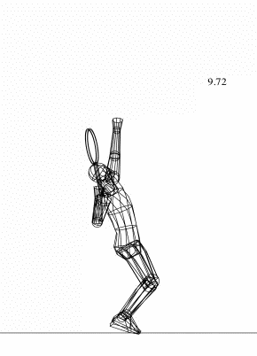
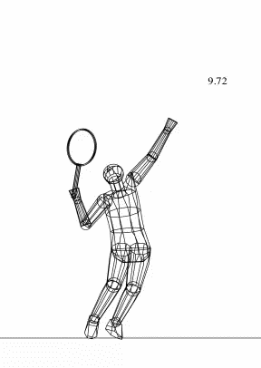
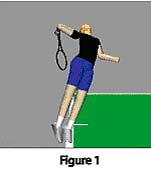
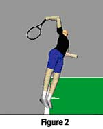
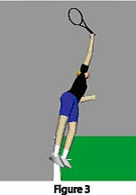
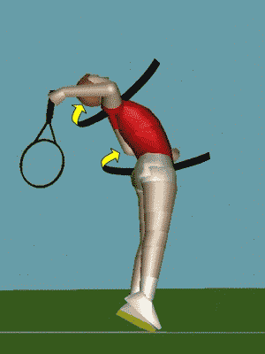
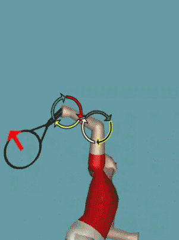
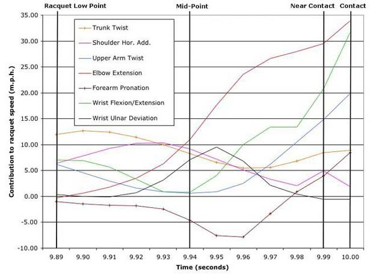
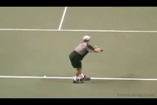

The Serve and Tennis Science¶
Dr. Brian Gordon
In 1992, after 10 years as a working teaching pro, I decided to try to learn more about the great game of tennis. When reading the popular literature about the game I would often note references to things like "forces" and "torques."
Even though I had no idea what the authors were talking about, I decided they must be important. My desire was to learn more about tennis, how to teach it, and how science could benefit real tennis players. And so I transited into the world of the academic study of tennis.

The result of the mathematical combination of nine NCAA Division I players can be displayed in a computer graphic
Now 10 years later, as I finish up my PhD, I still have no idea what many of the same authors are talking about. The problem is no longer that I don't understand the technical meaning of terms like "forces" and "torques." The problem is that the use of such terms was and continues to be so misguided.
Unfortunately, reading the scientific journals is just as frustrating. It seems I usually need every bit of my eleven years of graduate education just to understand the title, not to mention the body of an article which probably does contain informative research on tennis strokes.
Most of what players and coaches know about tennis stroke technique is based on interpretation of observations made by esteemed coaches, what is called qualitative analysis. Sport biomechanists have been acquiring and analyzing data, and making quantitative measurements in many sports for decades, including tennis. The problem is that the results have not been user friendly, nor have they generally been easily accessible to practitioners of the game.
I believe there is an uncrossed bridge between the qualitative insight of coaches and the quantitative results of scientists. While some modest efforts have been made to cross the bridge, we will not really gain a complete understanding of the tennis strokes until the scientific and coaching communities truly collaborate.
This article makes a foray across that bridge, based on my quantitative study of the service motion. First I want to explain what the study found about 3 key points in the service motion. Then I want to relate it to some of the qualitative study that has appeared on Tennisplayer.net, specifically the analysis of Advanced Tennis high speed video done by John Yandell.
The new high speed video technology has radically improved our ability to observe tennis strokes. While this analysis represents a major forward step in our understanding, its implementation is still subjective, and I feel there is still not enough information to reach unbiased conclusions.
This subjectivity is inherent to qualitative analysis at any level, and is not necessarily a negative attribute, as it does initiate a debate process and stimulates critical thinking that facilitates further understanding of the strokes. Still, more information about the strokes would be useful to add credibility to the conclusions of the qualitative process.
This is where science can come in, providing an additional type of information to solidify our understanding of the game. This information in the form of quantitative data is created through physical measurements of actual players.
Recently I have completed a body of research on the "power" tennis serve that I think illustrates how potentially beneficial such a collaboration could be. Many of the findings relate to issues discussed by John Yandell in his article entitled "The Myth of the Wrist."

The combination computer graphic indicates the intricate pattern of segment motions used to give speed to the racquet .
Most players and coaches would acknowledge that the most important characteristic of the power serve in tennis is the speed of the ball, assuming the speed can be controlled. Further, the speed of the ball is determined in large part by the speed of the racquet at contact. The speed of the racquet is determined by the intricate combined motion of all the segments of the body.
In the mid-eighties, a researcher from my laboratory outlined a method to calculate the contribution of the various body segment motions to the speed of the hand in a volleyball spike. In the nineties other researchers including the Australian biomechanist, Bruce Elliott, applied a similar technique to the tennis serve.
In 2003 I completed my own somewhat expanded analysis. My work was based on studying the serves of nine NCAA Division I players, measuring how the motion of each segment of the body contributed to the speed of the racquet head.
To do this, I mathematically combined the motions of nine servers. Next I calculated the contribution of the motions to the speed of the racquet face center. This information is broken down by the following body segments:
Legs
Trunk
Hitting upper arm
Hitting forearm
Hitting hand/racquet
The contribution from each segment (or associated joint action) was determined every 1/100 second from the racquet low point to just prior to contact. For this article, I've summarized the results at three key points in the motion:
The racquet low point
Just prior to contact (1/100 second before)
Half way between the first two points, what I call the mid-point



Racquet Low Point
Halfway Point
Just Prior to Contact
At the racquet low point as represented in the first figure, the speed of the racquet head was about 24 mph. Four major segment motions contributed to this speed. Most important was the twisting of the trunk, which accounted for about 50% of the speed. Extension of the wrist (backward movement of the hand) accounted for about 29% of the racquet head speed.
Upper arm twist (external rotation) and shoulder horizontal adduction (movement of the upper arm towards the mid-line of the body) contributed virtually equally, adding around 26% each. These can add up to 100% because other segment motions contributed negatively. It is important to note that a negative contribution may be necessary for a segment to correctly position itself or to contribute to the positioning of other adjacent segments.
Contributions to Racquet Head Speed at the Low Point

The solid figure graphic indicates the rotation of the two main contributing segments from the racquet low point to the mid point. Note the lateral motion of the racquet (left to right) is caused mainly by trunk twist while the upward influence is caused mainly by motion at the shoulder joint (horizontal adduction).
wisting of Trunk
50%
(28% hips)
(22% shoulders)
Wrist Extension
29%
Upper Arm Twist (external rotation)
26%
Shoulder Movement
26%
The racquet head speed by the mid-point of the upward swing (second figure) had increased from about 24 mph to about 39 mph. Again, this speed was mainly a function of four primary segment motions. The main contributor was forearm motion from elbow extension which accounted for about 29% of the racquet head speed.
The other main contributors, following very closely in importance, were shoulder horizontal adduction (same motion as at the low point but with the elbow held somewhat higher) with 24%, trunk twist with 22%, and wrist ulnar deviation (hand movement sideways towards the pinky) which was about 18%.
Contributions to Racquet Head Speed at the Halfway Point
Elbow Extension
29%
Shoulder Movement
24%
Trunk Twist
22%
(11% hips)
(11%shoulders)
Wrist Deviation (sideways)
18%
Just before contact in the third figure, racquet head speed reached a value of slightly more than 85 mph. This indicates that the period from mid-point to contact is critical to speed development. At this time, five segment motions were considered to be important to racquet head speed.
The most important segmental contributor was forearm motion from elbow extension, which was responsible for 35% of the speed of the racquet. Also contributing in order of significance were hand forward motion from wrist flexion at about 24%, upper arm twist 17%, trunk twist at 10%, and forearm pronation at 5%.
Contributions to Racquet Head Speed Prior to Contact

A different viewpoint shows how racquet speed is generated from the mid point to contact. Elbow extension and wrist flexion, the two main contributors, are highlighted. Note that elbow extension is important throughout, and critical early as the racquet is moving up. Also note wrist flexion exerts its main influence approaching contact.
Elbow Extension
35%
Wrist Flexion
24%
Upper Arm Twist (internal rotation)
17%
Trunk Twist
10%
(-3% hips)
(13% shoulders)
Forearm Pronation
5%
If you are wondering at this point why the analysis was cut off prior to contact, it is because measurements taken at contact are subject to potentially large errors for reasons beyond the scope of this article. Still, mathematical extension and visual inspection of the available range of joint motion in Figure 3 allows conjecture with reasonable confidence that the segmental motion contribution in the 1/100 second between Figure 3 and contact would come from continued elbow extension, wrist flexion, upper arm internal rotation, trunk twist, and forearm pronation. However, as the elbow is nearly fully extended in Figure 3, the forearm contribution to racquet head speed from elbow extension, for many servers, would decrease rapidly in the final milleseconds before contact.
For those who possess the geek gene that I seem to have inherited, the chart below shows the primary contributors throughout the phase from racquet low point to near contact by body segment motion (with predicted contact values).
My original research raised questions about the accuracy of some measurements near contact. Specifically, elbow extension, upper arm internal rotation, and forearm pronation proved difficult to measure from 2/100 second prior to contact, to contact. While the data presented in this article used a different and improved measurement technique, some error in the RELATIVE contributions of these three factors is possible. Readers should be aware that while the combined contribution of these factors is accurate, each may have slightly more or less contribution individually. Other contributions reported were not effected by this problem.
Based on this quantitative data we can conclude that John Yandell pretty much had it right, although his article leaves a few important things unrecognized and unexplained.
If you read his article on the "Myth of the Wrist" (Click Here), he states the swing pattern was a function of racquet position at the end of the drop, elbow extension that straightens the arm, and internal rotation of the hitting arm. Additional information provided from my quantitative analysis shows one should also consider seriously the twisting rotation of the trunk and motion generated from the shoulder joint complex. This allows a greater understanding of how the motion is really produced.
Further insight into serve mechanics is gained by exploring the main subject of John's article, the role of wrist motion. Wrist motion in fast, complicated activities like the serve is difficult to discern. To really follow the specific motion of the wrist, one would require a view of the motion along the precise axis of the joint movement. As this axis moves in space, a camera would need to move in perfect concert with it. Regardless of the frame rate of the camera, this viewpoint is logistically impossible to obtain.

But quantitative techniques can construct such a viewpoint. Using 3-dimensional measurements, a very accurate assessment of joint motion can be obtained.
If you followed my results you may have noticed that throughout the upward swing phase, the motion of the wrist is a significant determinant of the speed of the racquet. Wrist motion also effects the path of the swing. John's article, while acknowledging some motion, discounts wrist motion as a causative factor, particularly around the contact point. His argument is that any motion of the wrist is a reaction to the motion of other segments and not a conscious effect of muscular activity.
Basically, I agree with this argument. I also agree the benefit of the age old advice of snapping the wrist is probably insignificant although additional research is needed to determine this conclusively. There is little doubt, however, the motion in the wrist joint is actually extensive and a significant contributor to racquet head speed. This is very clear in my results and the results of other researchers. Regardless of the cause, the rotation of the hand and racquet will affect racquet head speed and path.
The preceding discussion may seem troubling. How can wrist joint motion occur without conscious muscular activity? To see how this could happen we need to look at one of those terms that gets thrown around loosely in discussions of tennis technique: "torque."

From world-class players to weekend warriors, the BIG serve requires optimal racquet speed contribution from ALL available segmental sources.
In practical terms, "Torque" is simply the turning or rotational effect caused by a force. In the case of the serve, applying torque to a body segment tends to cause that segment to rotate. But torque can be applied as a result of direct muscular action, or as a result of the motion of adjacent body segments. The latter form of application is termed "motion-dependent torque." This is a major source of torque (and therefore segment rotation) in rapid motion of linked segments (i.e. upper arm, forearm, and hand/racquet in the serve).
One could anecdotally argue that much of the wrist joint motion measured during the approach to contact during the serve is passively accomplished through motion-dependent torque. This joint motion, combined with that actively caused by muscular activity early in the upward swing, leads to impressive joint rotation speed leading into contact. So impressive, that any last ditched effort to increase it at contact by consciously "snapping the wrist" would likely be fruitless.
The same argument could be expanded to the elbow extension. The data indicate that forearm rotation (due to elbow extension) is critical to the swing pattern characteristics, particularly in the second half of the upward swing phase. Yet, it is likely that part of this rotation is due to motion-dependent effects during the serve. In studies done in throwing, as an example, a nerve blocking agent that rendered the triceps muscle (elbow extensor) unusable was given to subjects. The results showed minimal differences in throwing attributes, compared to throws without the nerve blocking agent. This and other research indicates that the rapid elbow extension seen in the latter stages of a throw has little to do with muscle activity and a lot to do with the motion of adjacent segments.
The point is, because the action of a joint and associated rotation of an adjacent segment may not be driven exclusively by muscle contraction, in no way diminishes its importance in defining the motion. It may, however, limit its effectiveness as a coaching focus. This is where I agree with John: you can't train a motion-dependent torque in the same way you can train a muscle driven joint torque. Instead, the training (coaching) should focus on the ultimate cause of the motion-dependent torque, which is muscular torque applied lower in the chain of linked segments (at the shoulder joint or in the trunk or in the legs for example).
To conclude, I'm reminded of something I learned in a computer science seminar: "Data do not imply their own explanation." The ability to measure and calculate millions of numbers will not further the understanding of tennis strokes. Biomechanics alone is not the holy grail of sport understanding, and there are some issues the current methods of biomechanics can't address.
It's also important to understand that biomechanical analysis itself is subject to a degree of error, that the analysis is time consuming and expensive, and that to date it has been difficult for academics, coaches, and players to work together productively. But the methods of biomechanics combined with knowledge and experience of tennis experts is a vehicle through which substantive advancement can be made in tennis understanding and communication. This collaboration can only help the tennis community.
This article is based in part on research published in the Journal of Sports Sciences.

Dr. Brian Gordon has changed the understanding of the biomechanics of high level tennis technique. His Biomechanically Engineered Stroke Technique (BEST) is the only empirically based stroke mechanics system in the world, growing from three decades of both academic and applied on court research. He is a founder of the Tennis Center for Performance Research in Miami, Florida, which is creating a new paradigm for player development. The center has assembled an unprecedented group of specialists with cutting edge knowledge across the entire range of tennis performance.
To visit his website, Click Here!
Top contact him directly, Click Here!